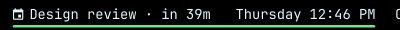
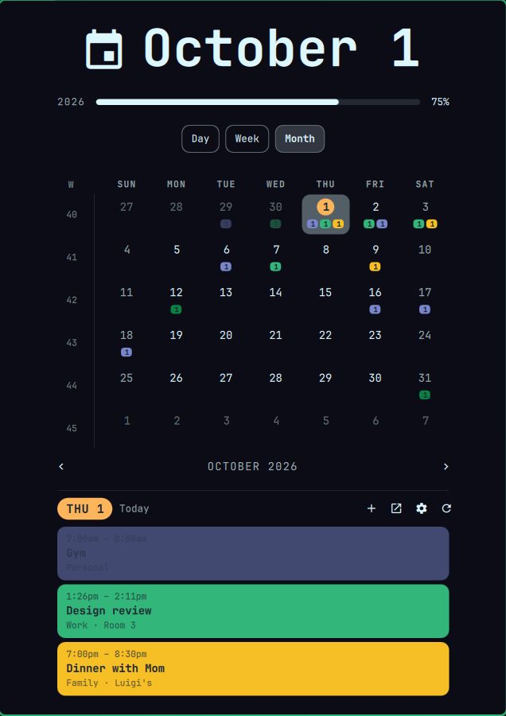
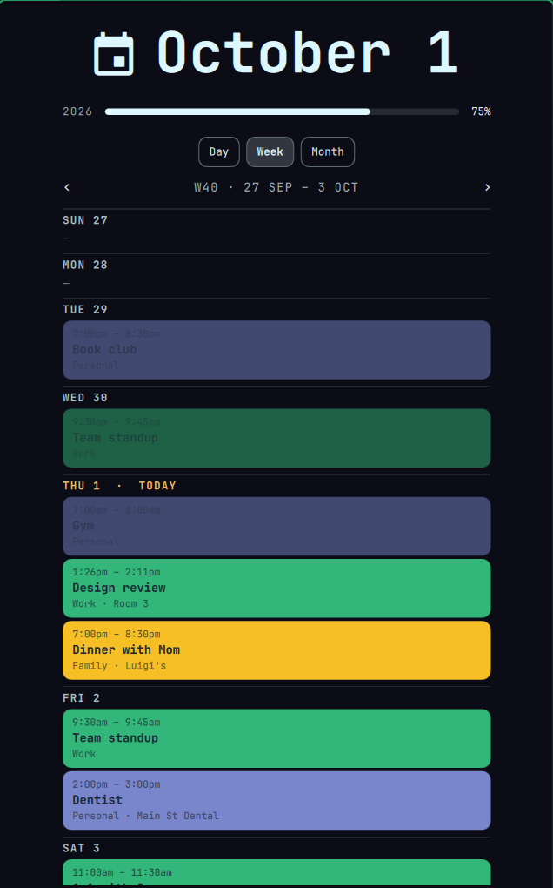
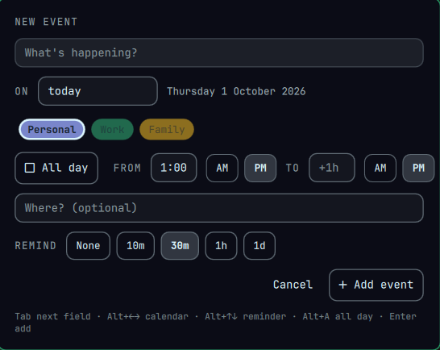

Google Calendar for Omarchy
Your Google Calendar in the Omarchy bar. The clock stays where it was, with your next event in front of it. Click it for your calendar.




The screenshots use made-up events.
What it does
- Your next event in the bar, with when it is:
Dentist · tue 2:00 PM,in 12m,until 3:00pm. - Day, week and month views. The month grid shows a colored chip per calendar with that day's count.
- Quick add with Alt+Shift+Space. The event goes straight to Google, so it shows up on your phone too.
- Reminders as desktop notifications, at each event's own Google reminder time.
- Nothing runs in the background. A short sync runs a few times a day, then exits.
- Looks after itself: it warns you if syncing stops, checks itself after Omarchy updates, and
calsync-doctorexplains any problem in plain English.
How you connect it to Google
Google doesn't hand out calendar access to shared apps without a lengthy review, so each person makes a free, private "OAuth client" in their own Google account. It takes about 20 minutes, once. The Google setup guide walks through every click. You can use this page and the privacy policy as your app's homepage and privacy link.
Install
omarchy pkg aur add gcalcli
# follow the Google setup guide, then:
gcalcli init
omarchy plugin add https://github.com/dawestheperson/omarchy-google-calendar --yes
~/.config/omarchy/plugins/dawestheperson.gcal/install.sh
omarchy restart shellFull instructions, updating and uninstalling are in the README.